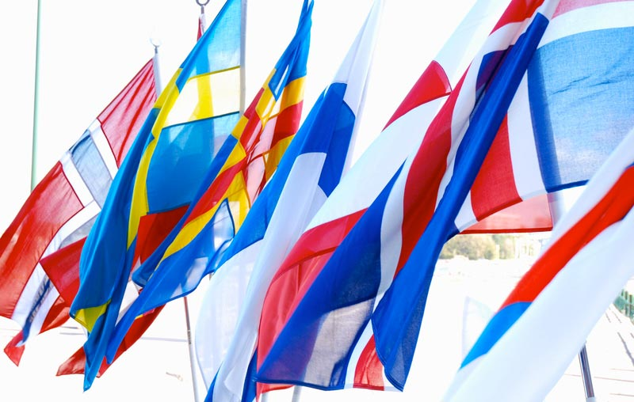
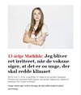
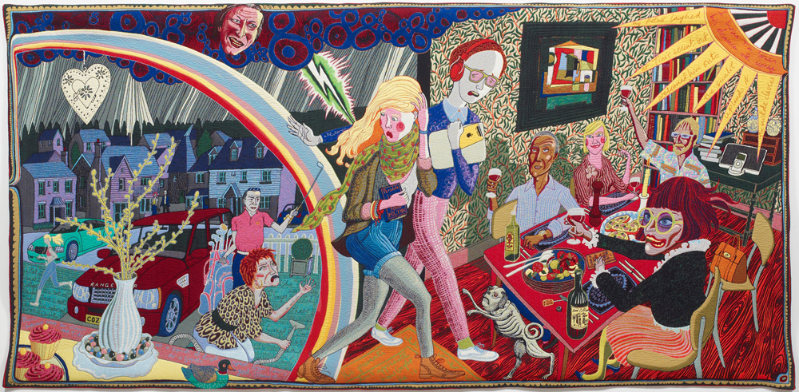

FP10 Dansk, skriftlig fremstilling
Prøvedel b
Modtagerrettet kommunikation
Ansøgning
Prøvedel c
Skriftlig fremstilling
1 Er der en voksen til stede?
2 Unge og kunst
3 Fordomme i øjenhøjde
Du skal skrive den valgte opgaves nummer og titel på din besvarelse.
Modtagerrettet kommunikation
Ansøgning
Prøvedel c
Skriftlig fremstilling
1 Er der en voksen til stede?
2 Unge og kunst
3 Fordomme i øjenhøjde
Du skal skrive den valgte opgaves nummer og titel på din besvarelse.
Før du skriver
Til eleven
Til denne prøve i skriftlig dansk har du adgang til internettet.
Du må ikke kommunikere eller dele dine dokumenter med andre under prøven.
Nogle af opgaverne kræver, at du skal søge informationer på internettet til brug for din besvarelse. I andre opgaver er det en åben mulighed at søge fakta og inspiration.
Layoutet af din besvarelse indgår i vurderingen. Tænk derfor på, at du udover tekst kan inddrage fx billeder og andre grafiske virkemidler.
Hvis du i din besvarelse anvender informationer, citater, billeder eller andre grafiske virkemidler hentet fra internettet, skal du til sidst i besvarelsen angive de væsentlige kilder.
Din besvarelse vurderes på både indhold, sprog og form. Se vurderingskriterierne nedenfor.
God arbejdslyst!
Vurderingskriterier til eleven
Din skriftlige besvarelse bliver vurderet ud fra en helhedsvurdering af 3 dimensioner: indhold, sprog og form.
Der gives én karakter.
Del b Modtagerrettet kommunikation
| Vurderingens 3 dimensioner | Vurderingskriterier | Forklaring |
| Tekstens indhold | Opgavens krav | I hvor høj grad opfylder din besvarelse de krav, der er stillet i opgaven? |
| Anvendelse af den modtagerrettede kommunikation | I hvor høj grad viser din besvarelse sikkerhed i at skrive til en bestemt modtager? | |
| Disponering | I hvor høj grad har du disponeret din besvarelse, så den passer til opgavekrav og modtager? | |
| Søgning og brug af internettet | Hvis du har anvendt internettet til at søge inspiration eller information, vurderes det, hvordan og i hvor høj grad du kritisk har bearbejdet, anvendt og gjort det søgte til dit eget i din besvarelse. | |
| Kildeangivelse | Hvis du har anvendt internettet, vurderes det, i hvor høj grad de væsentligste kilder er angivet korrekt i besvarelsen. | |
| Tekstens sprog | Sprog | I hvor høj grad er sproget i din besvarelse sikkert, varieret og tilpasset en bestemt modtager – både i ordforråd og syntaks?
I hvor høj grad er stavning og tegnsætning korrekt? |
| Tekstens form | Layout | I hvor høj grad er layoutet med til at fremme kommunikationen til en bestemt modtager i din besvarelse? |
Del c Skriftlig fremstilling
| Vurderingens 3 dimensioner | Vurderingskriterier | Forklaring |
| Tekstens indhold | Opgavens krav | I hvor høj grad opfylder din besvarelse de krav, der er stillet i opgaven? |
| Anvendelse af genre | I hvor høj grad viser din besvarelse sikkerhed i at skrive i genren? | |
| Disponering | I hvor høj grad er din besvarelse hensigtsmæssigt disponeret, så der er tydelig sammenhæng mellem opgavekrav og genre i din tekst? | |
| Søgning og brug af internettet | Hvis du har anvendt internettet til at søge inspiration eller information, vurderes det, hvordan og i hvor høj grad du kritisk har bearbejdet, anvendt og gjort det søgte til dit eget i din besvarelse. | |
| Kildeangivelse | Hvis du har anvendt internettet, vurderes det, i hvor høj grad de væsentligste kilder er angivet korrekt i besvarelsen. | |
| Tekstens sprog | Sprog | I hvor høj grad er sproget i din besvarelse forståeligt, klart og varieret både med hensyn til ordforråd, syntaks, tegnsætning og stavning? |
| Tekstens form | Layout | I hvor høj grad fremmer dit layout kommunikationen i forhold til det medie og den genre, du skriver i? |
b Modtagerrettet kommunikation
Ansøgning

Fotograf Søren Sigfusson/norden.org.
På Nordisk Ungdomshøjskole på Nordfyn oprettes fra næste år en særlig linje, hvor elever fra de forskellige nordiske lande kan møde hinanden. Der kommer elever fra hele Norden, og hvert land kan få tildelt maks. 15 pladser. Opholdet varer 8 måneder.
Under opholdet lærer man om de forskellige landes kultur, natur og samfundsforhold og kommer til at besøge to af landene. Det ene land vælger man selv.
For at skabe opmærksomhed om denne helt nye ungdomshøjskole tilbydes fem gratis elevpladser. Du vælger at søge en af disse gratis pladser.
|
Skriv en ansøgning, hvor du begrunder, hvorfor du skal have en af de fem gratis elevpladser.
I din ansøgning skal du:
Nordisk Ungdomshøjskole Højskolevej 5 5450 Otterup Din ansøgning skal være på 300-350 ord. Skriv antal ord, du har anvendt. |
c Skriftlig fremstilling

Du skal vælge en af disse opgaver:
2 Unge og kunst 3 Fordomme i øjenhøjde |
1 Er der en voksen til stede?
Verdens problemer optager både unge og voksne, men hvem der skal gøre hvad og hvornår, ser de ikke altid ens på. 13-årige Mathilde Boserup Lerche har på sin måde forsøgt at råbe de voksne op ved at skrive et debatindlæg til en avis. Klik på ikonet, og læs hendes debatindlæg, Jeg bliver ret irriteret, når de voksne siger, at det er os unge, der skal redde klimaet.
Du deltager i Ungdommens Folkemøde, som er en årlig og tilbagevendende begivenhed, hvor unge kan komme til orde. Her vælger du på din måde at blande dig i debatten. Du holder en tale om et emne, som du er frustreret over, at ingen voksne gør nok ved. Det kunne for eksempel være madspild, overdreven præstationskultur eller ulighed.
På Ungdommens Folkemøde er der en debatvæg, hvor teksterne fra dagens taler efterfølgende hænges op.
|  |
|
Skriv teksten til din tale.
Som forberedelse til din tale skal du søge informationer på internettet om det emne, du har valgt. I din tale skal du blandt andet:
Du skal layoute din tekst, så den efterfølgende kan hænge på Folkemødets debatvæg. |
2 Unge og kunst

Grayson Perry, Expulsion From Number 8 Eden Close, Gobelin, Kunstmuseet ARoS
(Oversættelse: Bortvisning fra Eden Close nummer 8. Note: Eden betyder paradis, close betyder lukket gade eller vej i et boligkvarter)
(Oversættelse: Bortvisning fra Eden Close nummer 8. Note: Eden betyder paradis, close betyder lukket gade eller vej i et boligkvarter)
Foreningen Unge & Kunst har udvalgt ti unge til at skrive kortprosatekster med afsæt i udvalgte værker, som kunstmuseet ARoS har udstillet. Du er en af disse ti unge.
Teksterne og fotos af værkerne skal samles og udgives i en kunstbog til unge.
Du vælger billedet Expulsion From Number 8 Eden Close af Grayson Perry.
|
Skriv en kortprosatekst, hvor du taget afsæt i billedet.
Din kortprosatekst skal:
|
3 Fordomme i øjenhøjde
Kilde: menneskebiblioteket.dk
På dit lokale bibliotek har man etableret et menneskebibliotek. Her kan man ikke låne bøger, men mennesker. Hvert “udlånsmenneske” repræsenterer en gruppe i samfundet, som hyppigt er udsat for fordomme. Det kan for eksempel være en hjemløs, en politimand, en bodybuilder, en veganer, en youtuber, en politiker eller en feminist. Ideen er at nedbryde fordomme og at skabe forståelse for menneskers forskellighed gennem det direkte møde og samtalen.
Forestil dig, at du vil besøge et menneskebibliotek og låne et menneske, du har en fordom over for.
|
Skriv et blogindlæg om at have fordomme over for bestemte mennesker.
Dit blogindlæg skal indeholde:
Dit indlæg skal bringes på dit lokale biblioteks blog. |